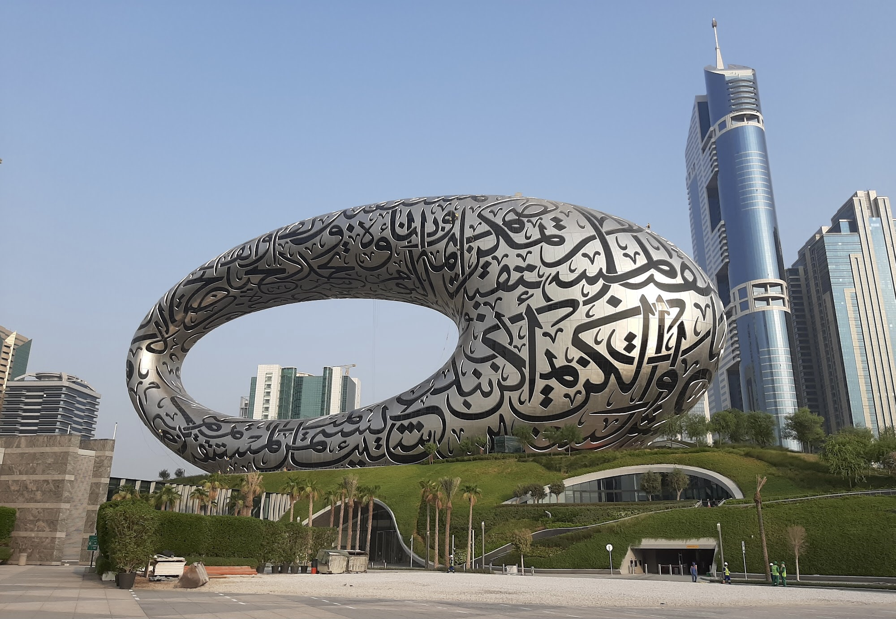
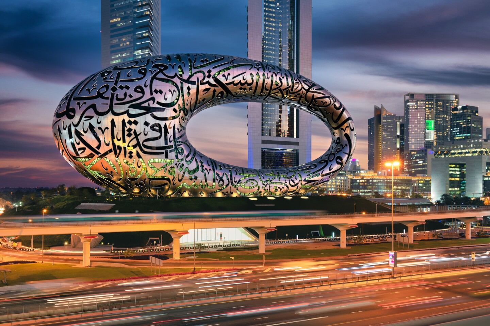
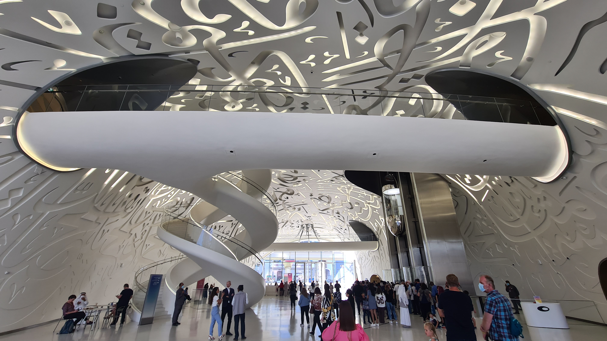

The Museum of the Future (Arabic: متحف المستقبل) is an exhibition space for innovative and futuristic ideologies, services, and products.
Located in the Financial District of Dubai, UAE, the Museum of the Future has three main elements: green hill, building, and void.
Founded by the Dubai Future Foundation.
The Arabic calligraphy engraved quotes on the Museum of the Future in Dubai is written by Emirati artist Matar Bin Lahej. This torus-shaped shell sits on top of the building and comprises 1,024 fire-retardant composite panels clad in stainless steel, and each of which has a unique 3D shape to create the Arabic script.
Killa Design and Buro Happold developed new parametric design and Building Information Modelling (BIM) tools, including a growth algorithm that employs digital means to grow the internal steel structure.


